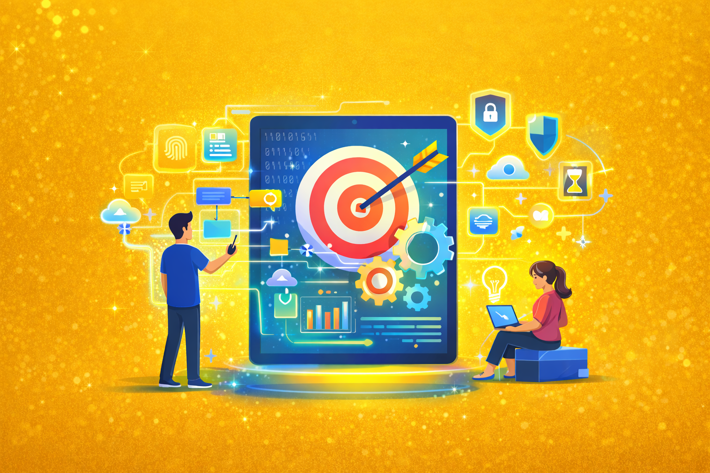
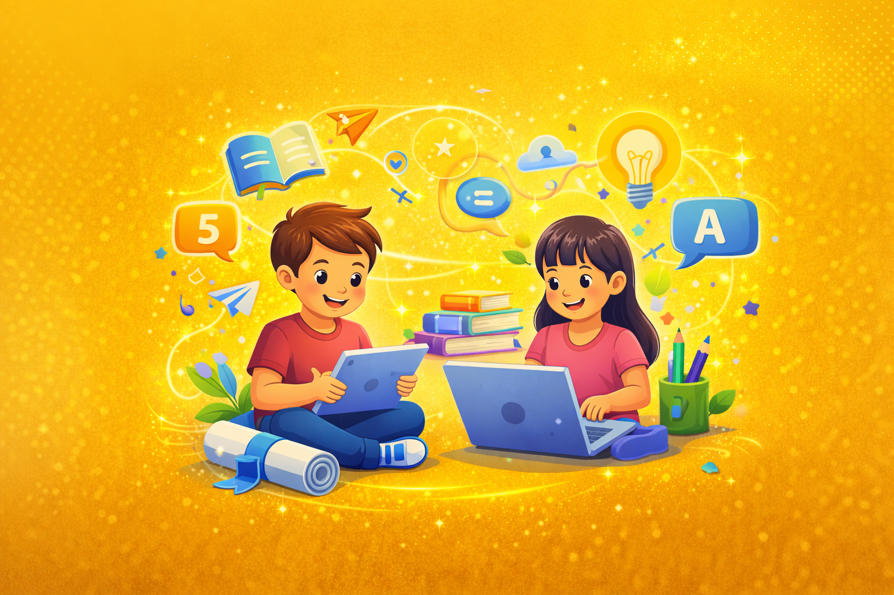
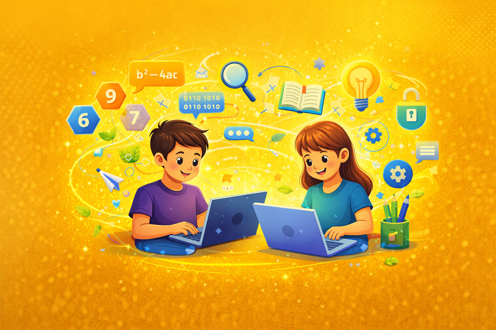
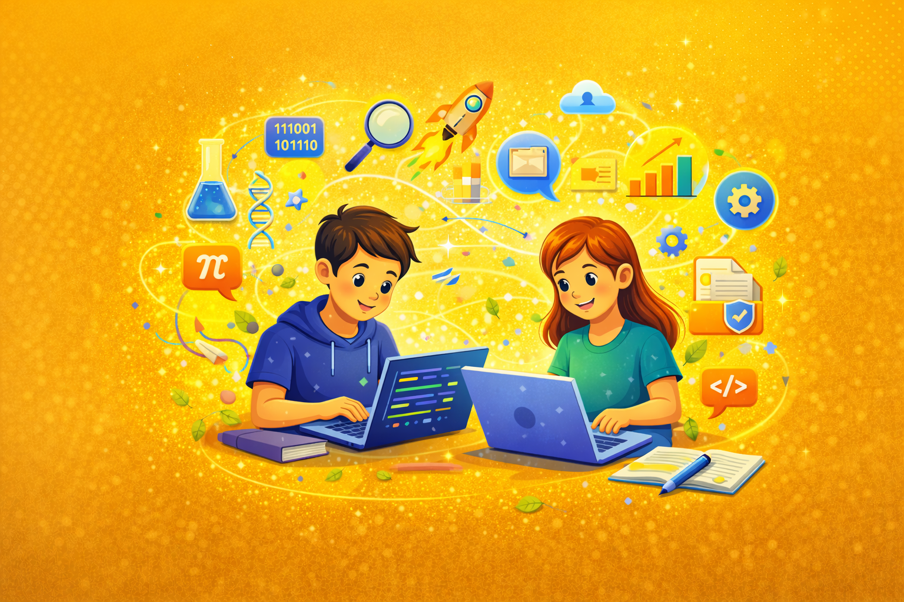
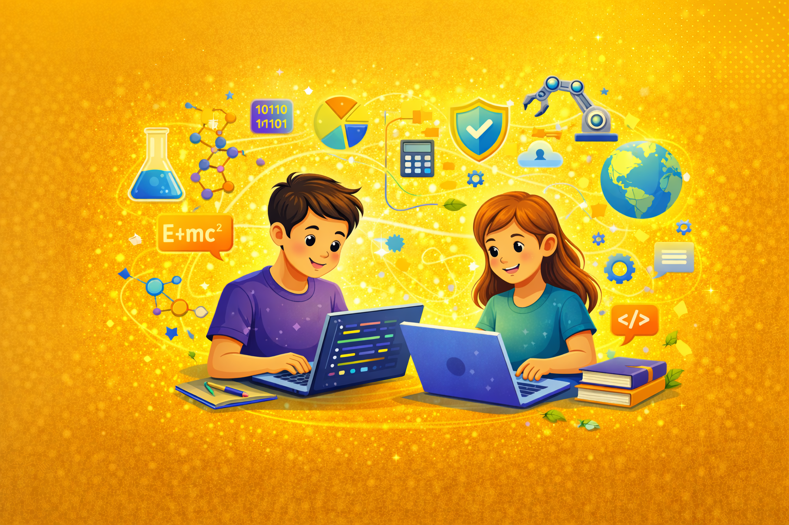

Формуємо цифрову компетентність і мислення майбутнього
Інформатика у закладах освіти (НУШ) — це важлива складова формування цифрової компетентності учнів. Предмет спрямований на розвиток умінь ефективно, безпечно та відповідально використовувати інформаційні технології у навчанні та житті.

У сучасному світі цифрові технології — основа більшості професій. Вивчення інформатики розвиває STEM-мислення, готує до майбутніх професій та формує інформаційну культуру особистості.

Учень / учениця:

Учень / учениця:

Учень / учениця:

Учень / учениця: